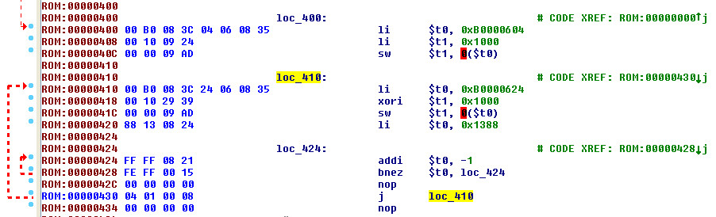
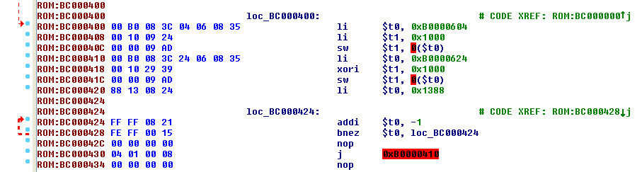

參考資訊：
https://www.cs.cornell.edu/courses/cs3410/2008fa/MIPS_Vol2.pdf
https://stackoverflow.com/questions/7877407/jump-instruction-in-mips-assembly
main.s
.extern _start
.set noreorder
.section .init
_start:
b reset
.text
reset:
li $8, 0xb0000604
li $9, (1 << (44 - 32))
sw $9, 0($8)
loop:
li $8, 0xb0000624
xori $9, $9, (1 << (44 -32))
sw $9, 0($8)
li $8, 5000
0:
addi $8, -1
bnez $8, 0b
nop
j loop
nop
上面這段程式，看起來並沒有問題，只是將$9的第12位元做XOR運算，然後輸出設定LED，但是，實際上是無法正確執行，LED無法閃爍
Linker Script
OUTPUT_FORMAT("elf32-tradlittlemips", "elf32-tradbigmips", "elf32-tradlittlemips")
OUTPUT_ARCH(mips)
ENTRY(_start)
SECTIONS {
ENTRY(_start)
. = 0x0000;
.init : { *(.init) }
. = 0x0400;
.text : { *(.text) }
.data : { *(.data) }
.bss : { *(.bss) }
}
使用IDA Pro查看時，因為記憶體載入使用預設0x00000000，因此，看不出問題

